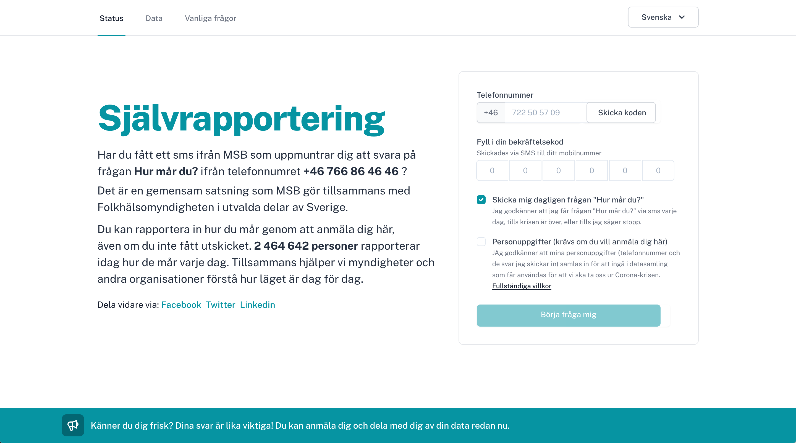

"... vore bra om folk frivilligt kunde rapportera hur de mår."
Governmental agencies can push out SMS to all mobiles in an area to ask its population "How are you feeling today?".
After an initial informative message has been sent, mobiles in that area receive a message each day asking How are you feeling today? via SMS.
Send "start" to +46 766 86 46 46 to initate a demo.
Data available at status46.se/data.
[HashedID1], 2020-04-04, 🤧 [HashedID1], 2020-04-05, 🤧 [HashedID1], 2020-04-05, 🤧🤒 (later that same day) [HashedID2], 2020-04-04, 👍 [HashedID2], 2020-04-05, 👍 [HashedID2], 2020-04-06, 🤧
Spread the number and let people register their responses without previously receiving the question. There is an active ongoing project in Danmark (c19.dk) that can be reused for this purpose.
Integrity is very important. You can choose to answer, or not and how much of your data you wish to provide.
The status46 system doesn't store mobile numbers at all, but all sms-traffic is stored in operator logs.
We can submit a follow up response when an SMS comes in by leaving a message in the "response body" when receiving the POST request to status46.
Trials can be up and running in Karlstad and surrounding areas together with MSB in the coming weeks. After evaluation and refinement the setup is ready for roll out in all of Sweden within two months and under the leadership of MSB.
Thank you to all the kind people who gave lots of relevant feedback during Hack the Crisis.
Special thanks to Anders!
Design of this website is inspired by klimathack.
They quoted him saying something similar, I can't find the article where I read it 😅.